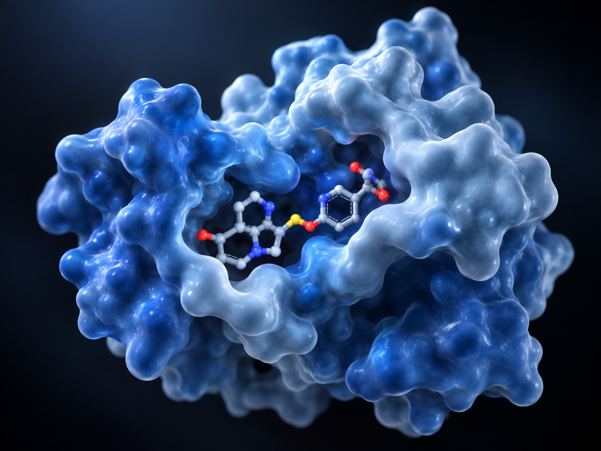

Computational / in-silico researchComputational Drug Repurposing Against Drug-Resistance-Associated Proteins of Leishmania tropica
Undergraduate thesis investigating potential efflux pump inhibitors against drug-resistance-associated proteins through protein analysis, structural modelling, molecular docking, ADMET assessment and molecular dynamics simulations.
Read case study